<title>Guide de formation EFTP</title>
<meta name="claude:viewport-fit-sides" content="cover">
<link rel="preconnect" href="https://fonts.googleapis.com">
<link rel="stylesheet" href="https://fonts.googleapis.com/css2?family=Atkinson+Hyperlegible:ital,wght@0,400;0,700;1,400&family=Archivo:wght@600;700;800&display=swap">
<style>
/* Mise en page : un fil de lecture par profil ; chaque étape = consigne à gauche, capture à droite (empilées sur téléphone). */
:root {
  --bg: #fbfaf7;
  --surface: #ffffff;
  --ink: #1d2320;
  --muted: #59625d;
  --line: #e2e0d8;
  --orange: #c24e00;      /* orange national, assombri pour le contraste du texte */
  --orange-soft: #fdeee3;
  --green: #0f7a37;       /* vert national */
  --green-soft: #e6f3ea;
  --red: #b42318;
  --red-soft: #fdecea;
  --blue: #1d5fbf;
  --blue-soft: #e8f0fb;
  --amber-soft: #fff6dc;
  --white: #ffffff;
  --shadow: 0 1px 2px rgb(29 35 32 / .06), 0 6px 20px rgb(29 35 32 / .06);
  --display: "Archivo", "Segoe UI", system-ui, sans-serif;
  --body: "Atkinson Hyperlegible", "Segoe UI", system-ui, sans-serif;
}
@media (prefers-color-scheme: dark) {
  :root:not([data-theme="light"]) {
    --bg: #141816; --surface: #1c211f; --ink: #e9ece8; --muted: #a3aca6; --line: #2f3632;
    --orange: #ff8a3d; --orange-soft: #3a2416; --green: #4cc27a; --green-soft: #17301f;
    --red: #ff7a6e; --red-soft: #3a1c19; --blue: #7fb0ff; --blue-soft: #18263b; --amber-soft: #352c14;
    --shadow: 0 1px 2px rgb(0 0 0 / .3), 0 6px 20px rgb(0 0 0 / .25);
    color-scheme: dark;
  }
}
:root[data-theme="dark"] {
  --bg: #141816; --surface: #1c211f; --ink: #e9ece8; --muted: #a3aca6; --line: #2f3632;
  --orange: #ff8a3d; --orange-soft: #3a2416; --green: #4cc27a; --green-soft: #17301f;
  --red: #ff7a6e; --red-soft: #3a1c19; --blue: #7fb0ff; --blue-soft: #18263b; --amber-soft: #352c14;
  --shadow: 0 1px 2px rgb(0 0 0 / .3), 0 6px 20px rgb(0 0 0 / .25);
  color-scheme: dark;
}
* { box-sizing: border-box; }
html { scroll-behavior: smooth; scroll-padding-top: 76px; }
@media (prefers-reduced-motion: reduce) { html { scroll-behavior: auto; } }
body { background: var(--bg); color: var(--ink); font-family: var(--body); font-size: 17px; line-height: 1.6; }
body::before { content: ""; position: fixed; inset: 0 0 auto; height: env(safe-area-inset-top, 0px); z-index: 10; background: var(--surface); }
.wrap { max-width: 1120px; margin: 0 auto; padding-left: max(16px, env(safe-area-inset-left, 0px)); padding-right: max(16px, env(safe-area-inset-right, 0px)); }
h1, h2, h3 { font-family: var(--display); line-height: 1.2; text-wrap: balance; margin: 0; }
h1 { font-size: clamp(2rem, 4.5vw, 3rem); font-weight: 800; letter-spacing: -.01em; }
h2 { font-size: clamp(1.5rem, 3vw, 2rem); font-weight: 800; }
h3 { font-size: 1.2rem; font-weight: 700; }
p { margin: 0; }
a { color: var(--green); }
a:focus-visible, summary:focus-visible { outline: 3px solid var(--orange); outline-offset: 2px; border-radius: 4px; }
code { font-size: .9em; }
.eyebrow { font-size: .78rem; font-weight: 700; letter-spacing: .09em; text-transform: uppercase; color: var(--muted); }
.ui { font-family: var(--body); font-weight: 700; font-size: .92em; background: var(--surface); border: 1px solid var(--line); border-bottom-width: 2px; border-radius: 6px; padding: .05em .4em; white-space: nowrap; }

/* En-tête */
.top { background: var(--surface); border-bottom: 1px solid var(--line); }
.flag { height: 6px; background: linear-gradient(90deg, var(--orange) 0 33.3%, var(--white) 33.3% 66.6%, var(--green) 66.6%); }
.hero { padding-block: 40px 32px; display: grid; gap: 18px; }
.hero p.lead { font-size: 1.15rem; color: var(--muted); max-width: 62ch; }
.meta { display: flex; flex-wrap: wrap; gap: 8px 18px; font-size: .9rem; color: var(--muted); }

/* Navigation (collante) */
.nav { position: sticky; top: env(safe-area-inset-top, 0px); z-index: 5; background: var(--surface); border-bottom: 1px solid var(--line); }
.nav .wrap { display: flex; gap: 6px; overflow-x: auto; padding-block: 8px; }
.nav a { flex: none; text-decoration: none; color: var(--ink); font-weight: 700; font-size: .95rem; padding: 8px 14px; border-radius: 999px; border: 1px solid var(--line); background: var(--bg); }
.nav a:hover { border-color: var(--green); color: var(--green); }

/* Profils */
.roles { display: grid; grid-template-columns: repeat(auto-fit, minmax(240px, 1fr)); gap: 14px; padding-block: 28px 8px; }
.role { display: grid; gap: 8px; align-content: start; padding: 18px; border-radius: 14px; border: 1px solid var(--line); background: var(--surface); text-decoration: none; color: inherit; box-shadow: var(--shadow); }
.role strong { font-family: var(--display); font-size: 1.1rem; }
.role span { color: var(--muted); font-size: .95rem; }
.role .tag { justify-self: start; font-size: .75rem; font-weight: 700; letter-spacing: .06em; text-transform: uppercase; padding: 2px 8px; border-radius: 999px; }
.tag.t-agent { background: var(--orange-soft); color: var(--orange); }
.tag.t-sup { background: var(--blue-soft); color: var(--blue); }
.tag.t-adm { background: var(--green-soft); color: var(--green); }

/* Parcours d'une collecte */
.flow { margin-block: 18px 8px; padding: 20px; border-radius: 14px; background: var(--surface); border: 1px solid var(--line); }
.flow ol { list-style: none; margin: 14px 0 0; padding: 0; display: grid; grid-template-columns: repeat(auto-fit, minmax(150px, 1fr)); gap: 10px; counter-reset: f; }
.flow li { counter-increment: f; position: relative; padding: 12px 12px 12px 44px; border-radius: 10px; background: var(--bg); border: 1px solid var(--line); font-size: .93rem; line-height: 1.4; }
.flow li::before { content: counter(f); position: absolute; left: 12px; top: 12px; width: 22px; height: 22px; border-radius: 50%; display: grid; place-items: center; font: 700 .8rem var(--display); color: var(--white); background: var(--green); }
.flow li b { display: block; }
.flow .back { margin-top: 12px; font-size: .93rem; color: var(--muted); }
.flow .back b { color: var(--red); }

/* Sections */
section.part { padding-block: 48px 8px; }
.part-head { display: grid; gap: 10px; padding-bottom: 18px; border-bottom: 2px solid var(--ink); margin-bottom: 8px; }
.part-head p { color: var(--muted); max-width: 70ch; }
.chapter { padding-top: 34px; display: grid; gap: 6px; }
.chapter > p { color: var(--muted); max-width: 70ch; }

.step { display: grid; grid-template-columns: minmax(0, 1fr) minmax(0, 1.25fr); gap: 22px; align-items: start; padding-block: 22px; border-bottom: 1px dashed var(--line); }
.step.tablet { grid-template-columns: minmax(0, 1.3fr) minmax(0, 1fr); }
.step .txt { display: grid; gap: 10px; min-width: 0; }
.step ol, .step ul { margin: 0; padding-left: 1.3em; display: grid; gap: 6px; }
.step figure { margin: 0; min-width: 0; }
.step img { display: block; width: 100%; max-width: 100%; height: auto; border-radius: 10px; border: 1px solid var(--line); box-shadow: var(--shadow); background: var(--white); }
.step.tablet img { max-width: 380px; margin-inline: auto; border-radius: 18px; border: 6px solid var(--ink); }
.step figcaption { font-size: .85rem; color: var(--muted); margin-top: 8px; text-align: center; }
.num { font: 800 .8rem var(--display); color: var(--orange); letter-spacing: .06em; text-transform: uppercase; }

.note { padding: 12px 14px; border-radius: 10px; font-size: .95rem; border-left: 4px solid; }
.note.tip { background: var(--green-soft); border-color: var(--green); }
.note.warn { background: var(--amber-soft); border-color: var(--orange); }
.note.stop { background: var(--red-soft); border-color: var(--red); }
.note b:first-child { display: block; margin-bottom: 2px; }

/* Exercices */
.ex { margin-top: 28px; padding: 20px; border-radius: 14px; border: 2px solid var(--green); background: var(--surface); display: grid; gap: 12px; }
.ex ol { margin: 0; padding-left: 1.3em; display: grid; gap: 10px; }
.ex .ok { color: var(--muted); font-size: .93rem; }

/* États et FAQ */
.table-wrap { overflow-x: auto; border-radius: 12px; border: 1px solid var(--line); background: var(--surface); }
table { width: 100%; border-collapse: collapse; font-size: .95rem; }
th, td { text-align: left; padding: 10px 12px; border-bottom: 1px solid var(--line); vertical-align: top; }
th { font-family: var(--display); font-size: .85rem; letter-spacing: .03em; color: var(--muted); }
tr:last-child td { border-bottom: 0; }
.chip { display: inline-block; font-weight: 700; font-size: .85rem; padding: 2px 10px; border-radius: 999px; white-space: nowrap; }
.c-grey { background: var(--line); color: var(--ink); }
.c-orange { background: var(--orange-soft); color: var(--orange); }
.c-blue { background: var(--blue-soft); color: var(--blue); }
.c-green { background: var(--green-soft); color: var(--green); }
.c-red { background: var(--red-soft); color: var(--red); }
details { border: 1px solid var(--line); border-radius: 12px; background: var(--surface); padding: 12px 16px; }
details + details { margin-top: 10px; }
summary { cursor: pointer; font-weight: 700; }
details p { margin-top: 8px; }
.faq { display: grid; margin-top: 16px; }
footer { margin-top: 56px; padding-block: 24px 40px; border-top: 1px solid var(--line); color: var(--muted); font-size: .9rem; }

@media (max-width: 820px) {
  .step, .step.tablet { grid-template-columns: minmax(0, 1fr); }
  .step figure { order: 2; }
}
</style>

<header class="top">
  <div class="flag" aria-hidden="true"></div>
  <div class="wrap hero">
    <p class="eyebrow">MEFTP · Recensement statistique de l'EFTP non formel</p>
    <h1>Guide de formation</h1>
    <p class="lead">Ce guide accompagne la séance de formation des agents recenseurs, des superviseurs et des administrateurs. Chaque partie suit l'ordre réel du travail, avec les écrans tels qu'ils apparaissent sur la tablette et dans le back-office.</p>
    <div class="meta"><span>Application tablette (Android) et back-office web</span><span>Questionnaire 2025.2</span><span>Captures réalisées sur des données fictives de démonstration</span></div>
  </div>
</header>

<nav class="nav" aria-label="Parties du guide">
  <div class="wrap">
    <a href="#parcours">Le parcours d'une collecte</a>
    <a href="#agent">Agent recenseur</a>
    <a href="#superviseur">Superviseur</a>
    <a href="#admin">Administrateur</a>
    <a href="#etats">États d'une collecte</a>
    <a href="#faq">Questions fréquentes</a>
  </div>
</nav>

<main class="wrap">
  <div class="roles">
    <a class="role" href="#agent"><span class="tag t-agent">Tablette</span><strong>Agent recenseur</strong><span>Trouver les centres, remplir le questionnaire, envoyer, corriger ce qui est renvoyé.</span></a>
    <a class="role" href="#superviseur"><span class="tag t-sup">Back-office</span><strong>Superviseur</strong><span>Suivre l'avancement, contrôler, valider ou renvoyer les collectes, valider les nouveaux centres.</span></a>
    <a class="role" href="#admin"><span class="tag t-adm">Back-office</span><strong>Administrateur</strong><span>Comptes, campagnes, affectations, versions de l'application, statistiques et exports.</span></a>
  </div>

  <div class="flow" id="parcours">
    <p class="eyebrow">Le parcours d'une collecte</p>
    <ol>
      <li><b>L'agent remplit</b>sur la tablette, même sans réseau.</li>
      <li><b>« Terminer »</b>la collecte attend l'envoi.</li>
      <li><b>Envoi automatique</b>dès que le réseau revient.</li>
      <li><b>Contrôle niveau 1</b>superviseur départemental.</li>
      <li><b>Contrôle niveau 2</b>superviseur régional.</li>
      <li><b>Validée</b>comptée dans les statistiques.</li>
    </ol>
    <p class="back">À chaque contrôle, le superviseur peut <b>invalider</b> : la collecte revient sur la tablette de l'agent avec le motif, il la corrige puis la renvoie.</p>
  </div>

  <!-- ============================================================ AGENT -->
  <section class="part" id="agent">
    <div class="part-head">
      <p class="eyebrow">Partie 1</p>
      <h2>Agent recenseur</h2>
      <p>Vous travaillez surtout sur la tablette. L'application fonctionne sans réseau : tout est enregistré sur la tablette au fur et à mesure, et part au serveur dès qu'une connexion est disponible.</p>
    </div>

    <div class="chapter"><h3>1. Se connecter</h3></div>
    <div class="step tablet">
      <div class="txt">
        <span class="num">Première fois seulement</span>
        <ol>
          <li>Ouvrez l'application <b>Recensement EFTP non formel</b>, avec une connexion internet.</li>
          <li>Saisissez votre <b>matricule ou numéro de téléphone</b> et le <b>mot de passe provisoire</b> remis par votre superviseur.</li>
          <li>Appuyez sur <span class="ui">Se connecter (en ligne)</span>, puis choisissez votre nouveau mot de passe.</li>
        </ol>
        <div class="note tip"><b>Ensuite, plus besoin de vous reconnecter.</b>L'application s'ouvre directement sur vos structures. Le mot de passe n'est redemandé qu'après « Verrouiller » ou « Se déconnecter », ou après un long moment sans connexion au serveur.</div>
        <div class="note warn"><b>Protégez la tablette.</b>Activez le verrouillage de l'écran Android (code ou schéma) et ne prêtez pas la tablette déverrouillée. Pour la confier un instant, utilisez le menu <span class="ui">⋮</span> › <span class="ui">Verrouiller</span>.</div>
      </div>
      <figure>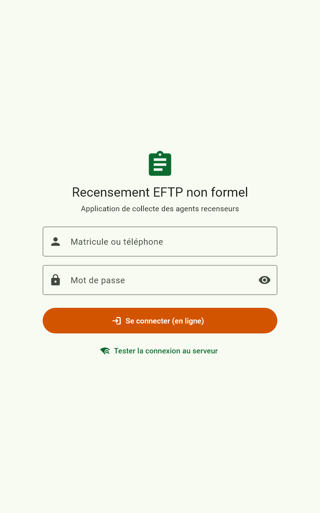<figcaption>Première connexion</figcaption></figure>
    </div>

    <div class="step tablet">
      <div class="txt">
        <span class="num">Le serveur est-il joignable ?</span>
        <ol>
          <li>Sur l'écran de connexion, ou plus tard dans le menu <span class="ui">⋮</span>, appuyez sur <span class="ui">Tester la connexion au serveur</span>.</li>
          <li>La tablette vérifie le réseau et le serveur (avec le temps de réponse), la base de données, puis votre session.</li>
          <li>Trois coches vertes : tout fonctionne. Sinon, lisez le conseil affiché (activer les données mobiles, se reconnecter, prévenir le superviseur…).</li>
        </ol>
        <div class="note tip"><b>Rien n'est perdu pendant le test.</b>Il n'envoie aucune collecte. Si tout va bien et que des collectes attendent, le bouton <span class="ui">Envoyer maintenant</span> les fait partir.</div>
      </div>
      <figure>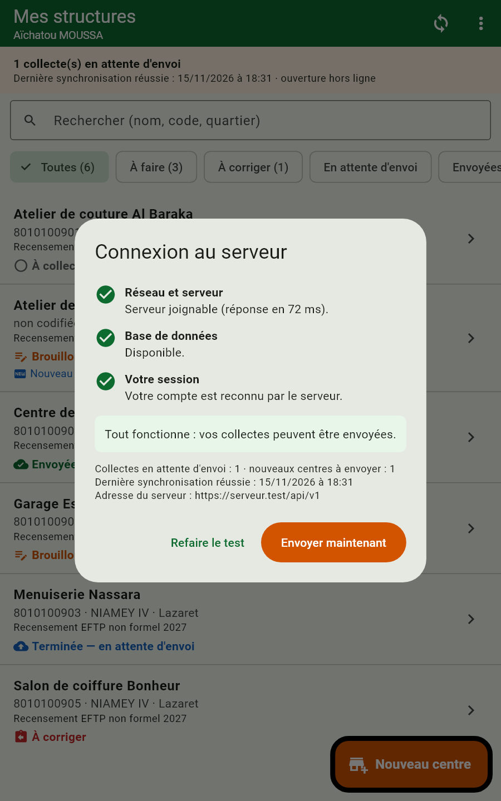<figcaption>Tester la connexion au serveur</figcaption></figure>
    </div>

    <div class="chapter"><h3>2. L'accueil : mes structures</h3></div>
    <div class="step tablet">
      <div class="txt">
        <ol>
          <li>Le bandeau du haut indique ce qui attend l'envoi et la dernière synchronisation réussie.</li>
          <li>Cherchez une structure par son nom, son code ou son quartier.</li>
          <li>Les filtres trient la liste : <span class="ui">À faire</span>, <span class="ui">À corriger</span>, <span class="ui">En attente d'envoi</span>, <span class="ui">Envoyées</span>, <span class="ui">Créés sur le terrain</span>.</li>
          <li>Sous chaque nom, l'état de la collecte est affiché en couleur (voir <a href="#etats">les états</a>).</li>
          <li>Appuyez sur une structure pour ouvrir son questionnaire.</li>
        </ol>
        <div class="note tip"><b>Synchroniser à la main</b>Le bouton <span class="ui">⟳</span> en haut à droite envoie et reçoit tout de suite. Tirer la liste vers le bas fait la même chose.</div>
      </div>
      <figure>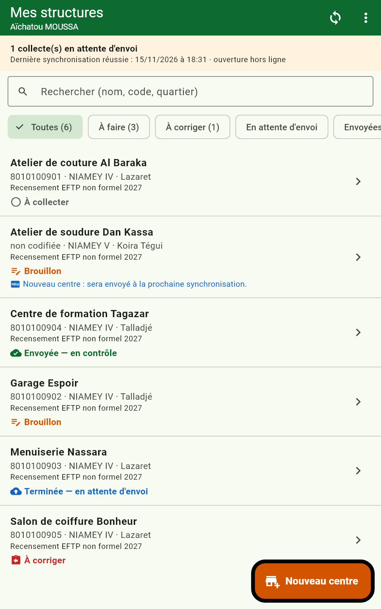<figcaption>Liste des structures et bouton « Nouveau centre »</figcaption></figure>
    </div>

    <div class="chapter"><h3>3. Recenser un centre qui n'est pas dans la liste</h3><p>Sur le terrain, vous découvrez les centres en faisant le tour de la ville. Vous pouvez en créer un et démarrer le questionnaire aussitôt, même sans réseau.</p></div>
    <div class="step tablet">
      <div class="txt">
        <span class="num">Devant le centre</span>
        <ol>
          <li>Sur l'accueil, appuyez sur le bouton orange <span class="ui">Nouveau centre</span>.</li>
          <li><b>Position GPS</b> : elle se relève toute seule. Restez devant le centre, à découvert. Si elle échoue, appuyez sur <span class="ui">Réessayer</span>.</li>
          <li>Écrivez le <b>nom du centre</b> (celui de l'enseigne ou celui donné par le responsable).</li>
        </ol>
      </div>
      <figure>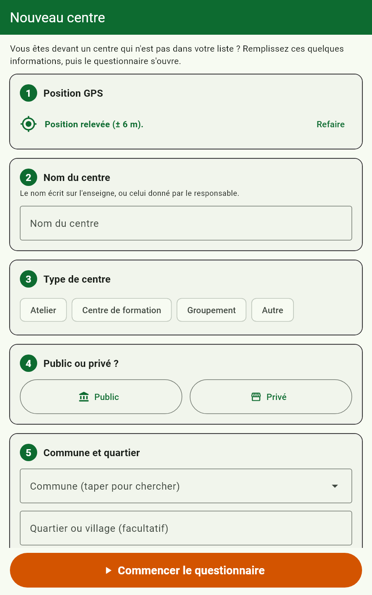<figcaption>GPS automatique, puis nom du centre</figcaption></figure>
    </div>
    <div class="step tablet">
      <div class="txt">
        <ol start="4">
          <li>Touchez le <b>type de centre</b> (si « Autre », précisez-le).</li>
          <li>Touchez <span class="ui">Public</span> ou <span class="ui">Privé</span>.</li>
          <li>Choisissez la <b>commune</b> (tapez ses premières lettres) et, si vous le savez, le quartier ou le village.</li>
          <li>Touchez <span class="ui">Urbaine (ville)</span> ou <span class="ui">Rurale (village)</span>.</li>
          <li>Appuyez sur <span class="ui">Commencer le questionnaire</span> : il s'ouvre déjà rempli avec ces informations.</li>
        </ol>
        <div class="note tip"><b>Ce qui se passe ensuite</b>Le centre part au serveur à la prochaine synchronisation, avant son questionnaire. Il reste « proposé » jusqu'à sa validation par votre superviseur.</div>
      </div>
      <figure>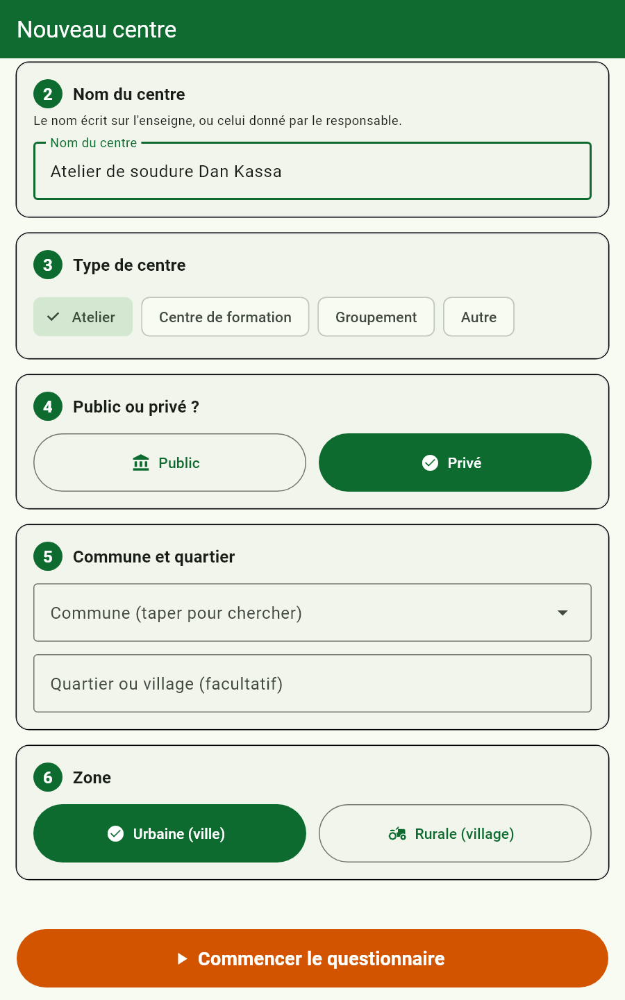<figcaption>Type, statut, commune et zone</figcaption></figure>
    </div>
    <div class="step tablet">
      <div class="txt">
        <span class="num">Éviter les doublons</span>
        <p>Si un centre au nom proche existe déjà dans la commune, un encadré jaune l'affiche pendant que vous écrivez le nom.</p>
        <ul>
          <li>C'est le même centre : appuyez sur <span class="ui">Ouvrir</span> pour remplir sa fiche existante.</li>
          <li>C'est un autre centre : continuez ; l'application vous demandera de confirmer.</li>
        </ul>
        <div class="note warn"><b>Un doublon fausse les statistiques.</b>Dans le doute, demandez au responsable si le centre a déjà été recensé.</div>
      </div>
      <figure>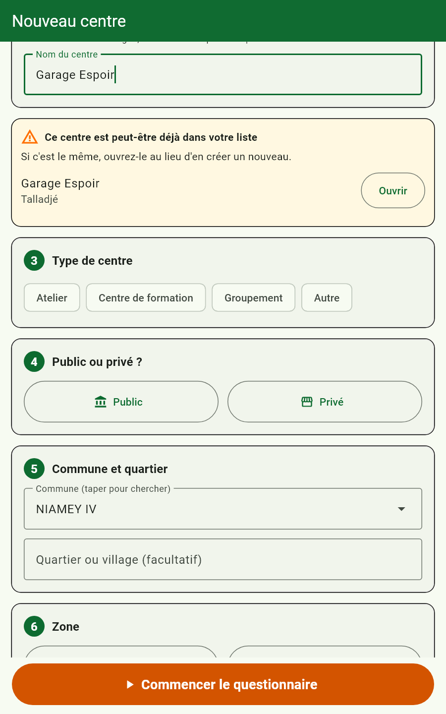<figcaption>Alerte de doublon possible</figcaption></figure>
    </div>

    <div class="chapter"><h3>4. Remplir le questionnaire</h3></div>
    <div class="step tablet">
      <div class="txt">
        <ol>
          <li>Le questionnaire est découpé en 5 sections (onglets en haut).</li>
          <li>Passez d'une section à l'autre avec <span class="ui">Précédent</span> et <span class="ui">Suivant</span> en bas, ou en faisant glisser l'écran.</li>
          <li>Tout est <b>enregistré automatiquement</b> : vous pouvez fermer l'application et reprendre plus tard.</li>
          <li>La position GPS est relevée automatiquement à l'ouverture.</li>
        </ol>
        <div class="note tip"><b>Le point orange • à côté d'une question</b>signifie qu'elle devrait normalement être remplie. Si le centre ne peut pas répondre, laissez-la vide : ce n'est jamais bloquant.</div>
      </div>
      <figure>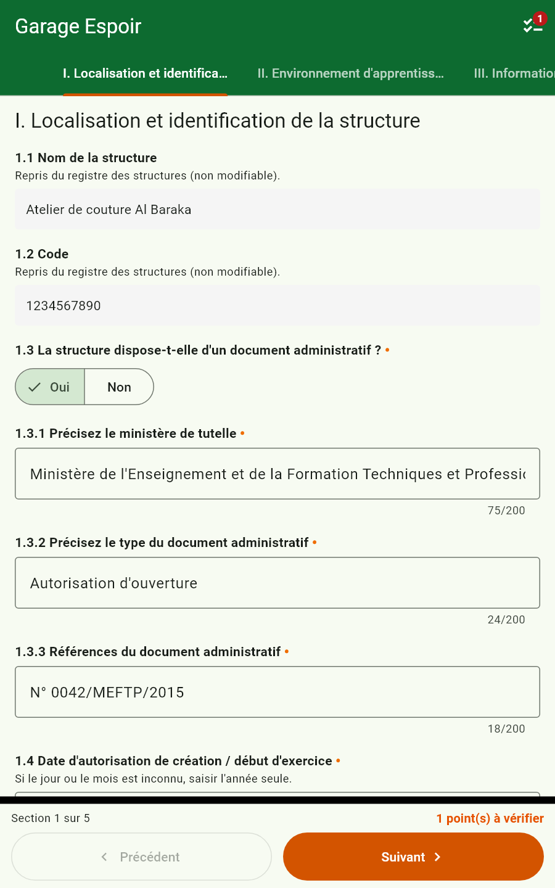<figcaption>Navigation par sections</figcaption></figure>
    </div>
    <div class="step tablet">
      <div class="txt">
        <span class="num">Messages orange et rouges</span>
        <ul>
          <li><b>Orange</b> : à vérifier, <b>jamais bloquant</b>. Une question vide, une incohérence (latrines, jeunes accompagnés, chiffre de la question 2.1 différent de la Section IV, date dans le futur…), un numéro de téléphone mal écrit.</li>
          <li><b>Rouge</b> : seulement une valeur impossible à enregistrer (texte dans un nombre, nombre trop grand, date mal écrite, même métier saisi deux fois). Elle doit être corrigée.</li>
        </ul>
        <p>L'icône de liste en haut à droite, avec son compteur, ouvre la liste de tous les points ; touchez-en un pour y aller.</p>
        <div class="note warn"><b>Question 2.1 (apprentis par durée)</b>C'est un tableau à remplir librement : durées en lignes, secteurs et sexe en colonnes, avec la ligne Total calculée en direct. Si un chiffre diffère des métiers déclarés en Section IV, la case devient orange et un message « Incohérence 2.1 » l'explique : vérifiez avec le responsable et corrigez l'un ou l'autre, ou continuez si l'écart est justifié.</div>
      </div>
      <figure>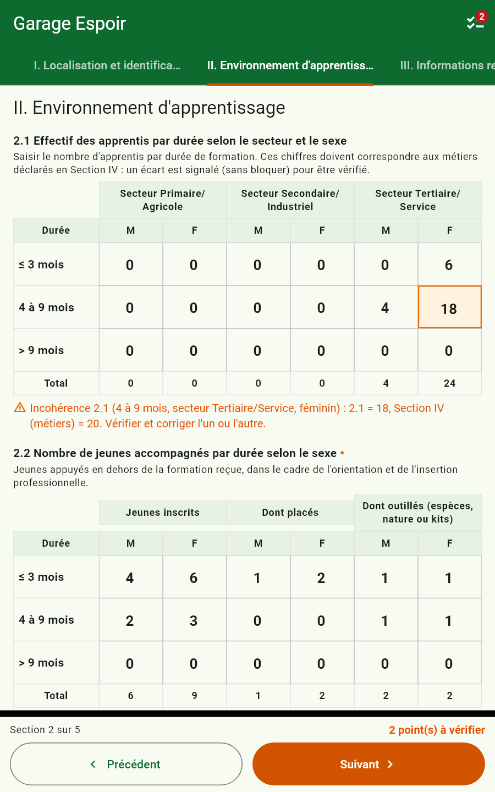<figcaption>Contrôle de cohérence, non bloquant</figcaption></figure>
    </div>

    <div class="chapter"><h3>5. Terminer et envoyer</h3></div>
    <div class="step tablet">
      <div class="txt">
        <ol>
          <li>Dans la dernière section, vous pouvez photographier la <b>fiche papier signée</b> (facultatif).</li>
          <li>Appuyez sur <span class="ui">Terminer</span>.</li>
          <li>S'il reste des questions vides, l'application le rappelle : <span class="ui">Voir la liste</span> pour les compléter, ou <span class="ui">Terminer quand même</span> si le centre ne peut pas répondre.</li>
          <li>La collecte passe à « Terminée — en attente d'envoi » et part dès que le réseau le permet.</li>
        </ol>
        <div class="note tip"><b>Pas de réseau ?</b>Ce n'est pas grave. Continuez vos collectes ; l'envoi se fait tout seul plus tard, ou quand vous appuyez sur <span class="ui">⟳</span>.</div>
      </div>
      <figure>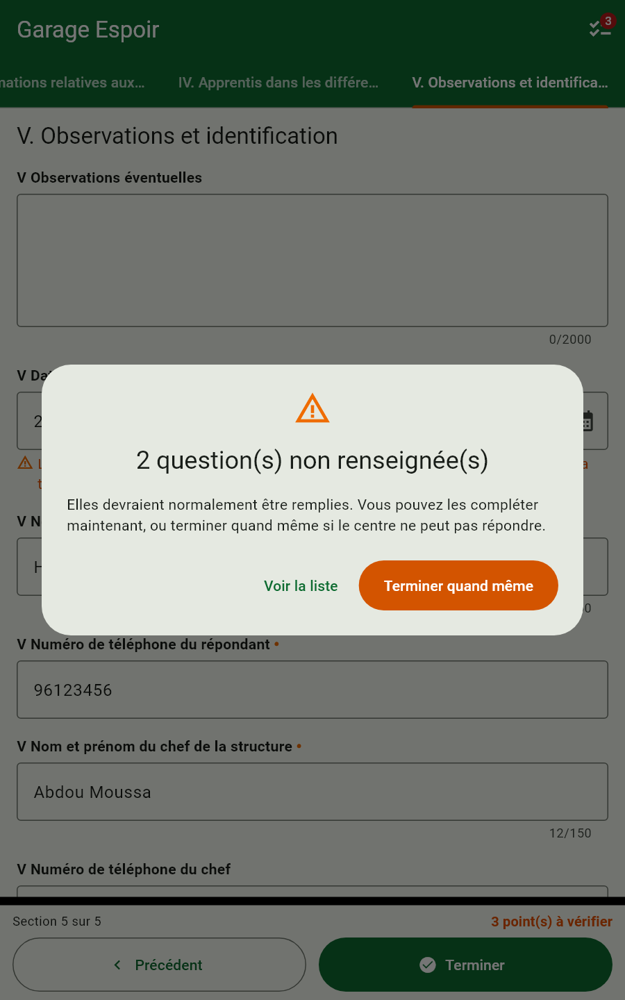<figcaption>Rappel avant de terminer</figcaption></figure>
    </div>

    <div class="chapter"><h3>6. Corriger une collecte renvoyée</h3></div>
    <div class="step tablet">
      <div class="txt">
        <ol>
          <li>Après une synchronisation, une collecte invalidée apparaît en rouge : <span class="chip c-red">À corriger</span>.</li>
          <li>Ouvrez-la : le motif et les précisions du superviseur s'affichent en haut.</li>
          <li>Corrigez les réponses concernées, puis <span class="ui">Terminer</span> à nouveau.</li>
        </ol>
        <div class="note warn"><b>Mise à jour de l'application</b>Si un bandeau propose une nouvelle version, appuyez sur <span class="ui">Télécharger et installer</span>. Vos collectes restent sur la tablette. Un nouveau questionnaire, lui, se télécharge tout seul à la synchronisation.</div>
      </div>
      <figure>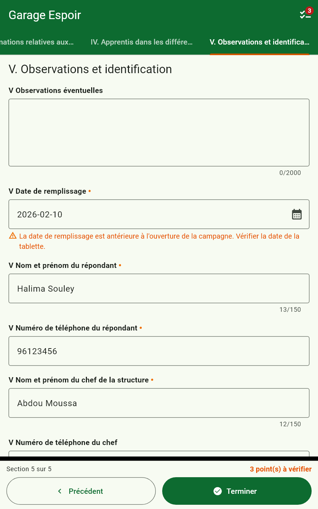<figcaption>Dernière section : « Terminer »</figcaption></figure>
    </div>

    <div class="chapter"><h3>7. Saisir sur le web (fiches papier)</h3><p>Certaines campagnes se font sur questionnaire papier : les fiches sont ensuite saisies dans le back-office, rubrique <span class="ui">Ma saisie</span>.</p></div>
    <div class="step">
      <div class="txt">
        <ol>
          <li>Connectez-vous au back-office avec vos identifiants, puis ouvrez <span class="ui">Ma saisie</span>.</li>
          <li>Choisissez la structure et appuyez sur son bouton.</li>
          <li>Les sections sont à gauche. Une pastille <span class="chip c-red">rouge</span> compte les erreurs, une <span class="chip c-orange">orange</span> les questions vides.</li>
          <li>Le cadre <b>Contrôle</b> liste d'abord les erreurs bloquantes, puis les questions vides regroupées par section.</li>
          <li>Le brouillon est conservé sur le serveur ; appuyez sur <span class="ui">Soumettre</span> quand la fiche est complète.</li>
        </ol>
      </div>
      <figure>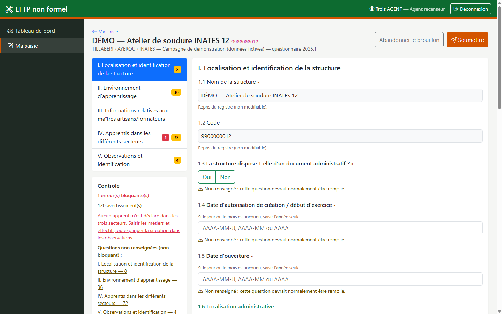<figcaption>Saisie web d'une fiche</figcaption></figure>
    </div>

    <div class="ex">
      <h3>Exercices pour la séance (agents)</h3>
      <ol>
        <li><b>Nouveau centre</b> : créez « Atelier de soudure Dan Kassa », atelier privé, urbain, dans votre commune. Vérifiez qu'il apparaît dans le filtre <span class="ui">Créés sur le terrain</span>.</li>
        <li><b>Doublon</b> : recommencez avec le nom d'une structure déjà dans votre liste. Que propose l'application ?</li>
        <li><b>Hors réseau</b> : activez le mode avion, remplissez et terminez une collecte. Désactivez-le, puis synchronisez. La collecte doit passer à « Envoyée — en contrôle ».</li>
        <li><b>Cohérence</b> : déclarez en Section IV un métier de 4 à 9 mois avec 3 apprenties, puis saisissez 2 à la question 2.1. Lisez le message et corrigez.</li>
      </ol>
      <p class="ok">Les exercices se font sur la campagne de démonstration ; demandez au formateur vos identifiants de test.</p>
    </div>
  </section>

  <!-- ============================================================ SUPERVISEUR -->
  <section class="part" id="superviseur">
    <div class="part-head">
      <p class="eyebrow">Partie 2</p>
      <h2>Superviseur</h2>
      <p>Vous travaillez dans le back-office web. Le superviseur départemental contrôle au niveau 1, le superviseur régional au niveau 2. Vous ne voyez que les structures et les agents de votre zone.</p>
    </div>

    <div class="chapter"><h3>1. Suivre l'avancement</h3></div>
    <div class="step">
      <div class="txt">
        <ol>
          <li>Après connexion, le <b>Tableau de bord</b> s'ouvre sur la campagne en cours (changez-la dans la liste en haut à droite).</li>
          <li>Les cartes du haut donnent la couverture, les collectes validées, à contrôler et à corriger, le rythme des 7 derniers jours et la date de fin projetée.</li>
          <li>La carte <b>À traiter par moi</b> compte les collectes que vous pouvez valider maintenant.</li>
        </ol>
        <div class="note tip"><b>Rythme et fin projetée</b>Si la fin projetée dépasse la date de clôture, le rythme est trop faible : regardez quels agents avancent peu dans <span class="ui">Statistiques</span> › <span class="ui">Agents</span>.</div>
      </div>
      <figure>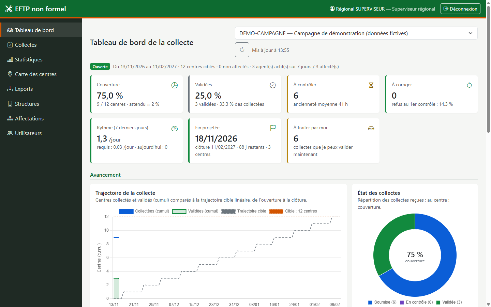<figcaption>Tableau de bord</figcaption></figure>
    </div>

    <div class="chapter"><h3>2. Trouver les collectes à contrôler</h3></div>
    <div class="step">
      <div class="txt">
        <ol>
          <li>Ouvrez <span class="ui">Collectes</span>.</li>
          <li>Cochez <span class="ui">À traiter par moi</span> : seules restent les collectes qui attendent votre décision.</li>
          <li>Affinez au besoin par statut, niveau, commune ou nom de structure.</li>
          <li>Appuyez sur <span class="ui">Ouvrir</span>.</li>
        </ol>
      </div>
      <figure>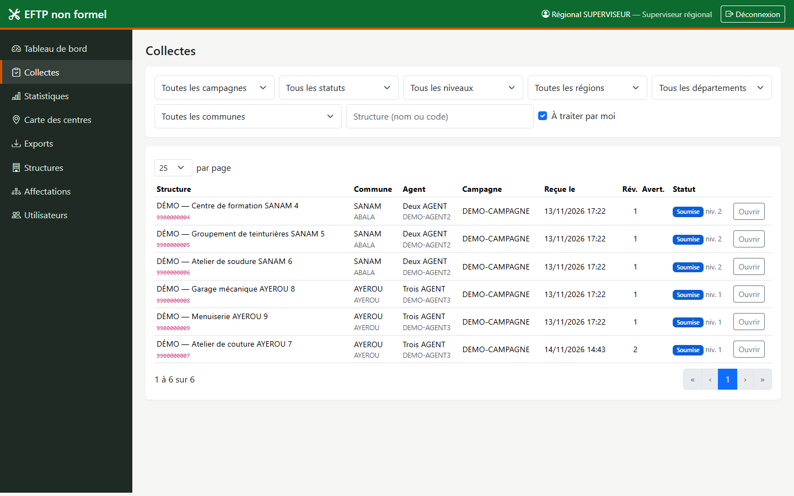<figcaption>Collectes à traiter</figcaption></figure>
    </div>

    <div class="chapter"><h3>3. Contrôler, puis valider ou invalider</h3></div>
    <div class="step">
      <div class="txt">
        <ol>
          <li>Appuyez sur <span class="ui">Prendre en charge</span> pour signaler aux autres que vous traitez la fiche.</li>
          <li>Lisez les réponses, puis le cadre de droite : avertissements, <b>écarts avec le registre</b>, position GPS et chiffres clés.</li>
          <li>Les questions laissées vides apparaissent dans les avertissements : jugez si l'absence est acceptable.</li>
          <li>Si tout est cohérent : <span class="ui">Valider</span>.</li>
        </ol>
      </div>
      <figure>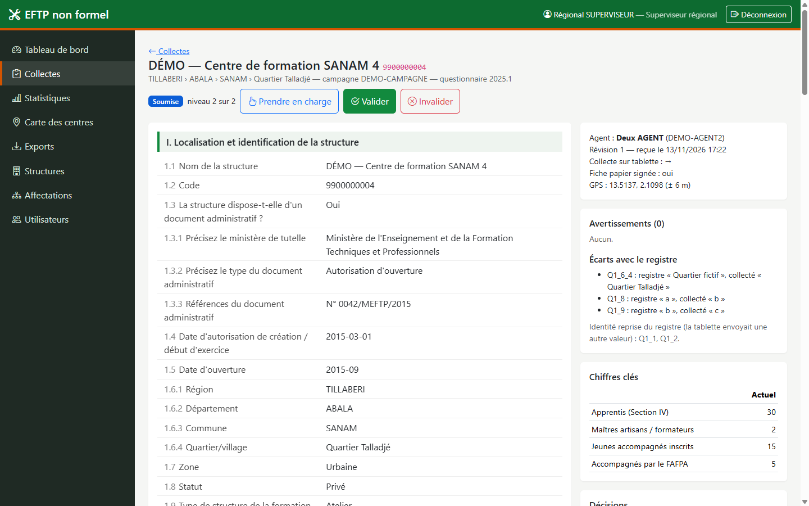<figcaption>Fiche de contrôle</figcaption></figure>
    </div>
    <div class="step">
      <div class="txt">
        <span class="num">Renvoyer pour correction</span>
        <ol>
          <li>Appuyez sur <span class="ui">Invalider</span>.</li>
          <li>Choisissez le <b>motif</b> et écrivez des <b>précisions</b> claires : quelles questions revoir et pourquoi.</li>
          <li>La collecte repart sur la tablette de l'agent avec votre message.</li>
        </ol>
        <div class="note warn"><b>Écrivez pour l'agent.</b>« Section IV : 30 apprentis déclarés mais 2 formateurs ; vérifier les effectifs du métier Couture » aide plus que « données incohérentes ».</div>
      </div>
      <figure>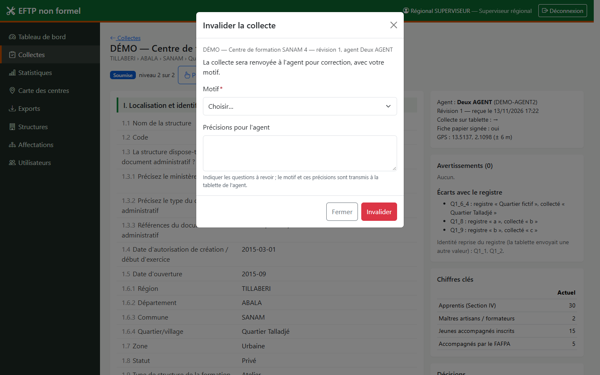<figcaption>Invalider avec un motif</figcaption></figure>
    </div>

    <div class="chapter"><h3>4. Valider plusieurs collectes à la fois</h3><p>Pour les collectes sans difficulté, la validation groupée fait gagner beaucoup de temps.</p></div>
    <div class="step">
      <div class="txt">
        <ol>
          <li>Dans <span class="ui">Collectes</span>, cochez <span class="ui">À traiter par moi</span>.</li>
          <li>Cochez les collectes à valider (la case de l'en-tête coche toute la page). Une barre indique combien sont sélectionnées, et combien ont des avertissements.</li>
          <li>Appuyez sur <span class="ui">Valider la sélection</span>, ajoutez si besoin un commentaire, puis confirmez.</li>
        </ol>
        <div class="note warn"><b>Ouvrez d'abord les collectes avec avertissements.</b>La colonne « Avert. » les signale. Une collecte avec des questions vides ou des incohérences mérite un coup d'œil avant d'être validée.</div>
      </div>
      <figure>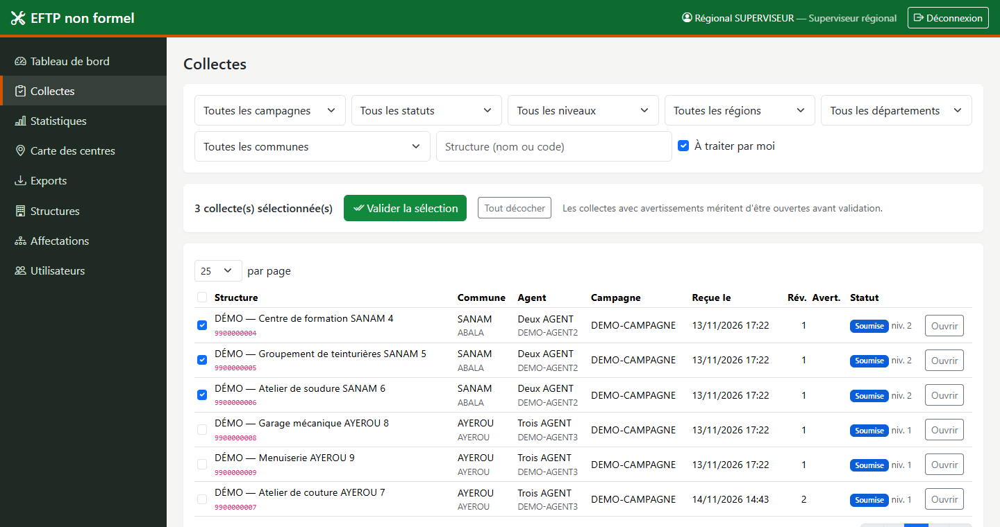<figcaption>Sélection de plusieurs collectes</figcaption></figure>
    </div>
    <div class="step">
      <div class="txt">
        <span class="num">Ce qui se passe</span>
        <p>Chaque collecte suit exactement les mêmes contrôles qu'une validation une par une : elle passe au niveau suivant, ou devient validée au dernier niveau. Si l'une ne peut pas être validée (déjà prise en charge par un collègue, par exemple), les autres le sont quand même et la raison s'affiche.</p>
      </div>
      <figure>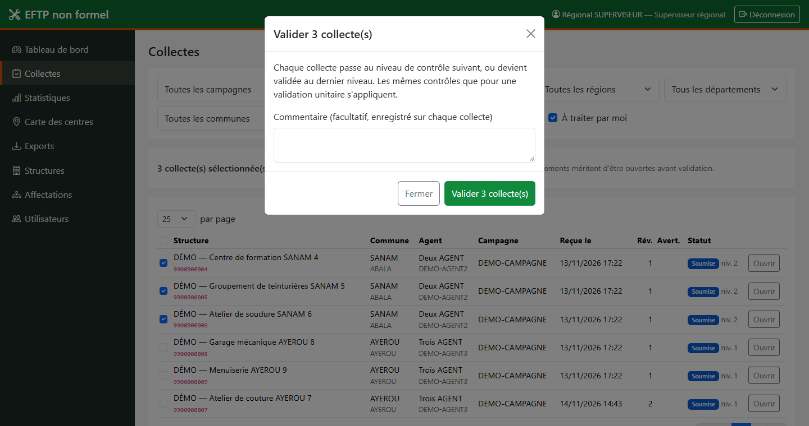<figcaption>Confirmation</figcaption></figure>
    </div>

    <div class="chapter"><h3>5. Valider les centres créés sur le terrain</h3></div>
    <div class="step">
      <div class="txt">
        <ol>
          <li>Ouvrez <span class="ui">Structures</span> et filtrez le statut sur <b>Proposée</b>.</li>
          <li>Vérifiez le nom, la commune et la position GPS du centre.</li>
          <li>Validez-le, ou fusionnez-le avec la fiche existante s'il s'agit d'un doublon.</li>
        </ol>
        <div class="note tip"><b>Doublon signalé</b>Quand le serveur reçoit un centre au nom proche d'un centre existant, ou situé tout près sur la carte, il le signale. Ces cas sont à traiter en priorité.</div>
      </div>
      <figure>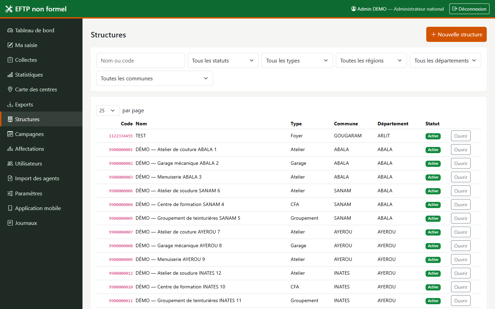<figcaption>Registre des structures</figcaption></figure>
    </div>

    <div class="chapter"><h3>6. Voir les centres sur la carte</h3></div>
    <div class="step">
      <div class="txt">
        <ol>
          <li>Ouvrez <span class="ui">Carte des centres</span>.</li>
          <li>La légende distingue les centres publics et privés ; changez le fond (plan, satellite, hybride) en haut à droite de la carte.</li>
          <li>Un point isolé loin de sa commune signale souvent une erreur de position GPS.</li>
        </ol>
      </div>
      <figure>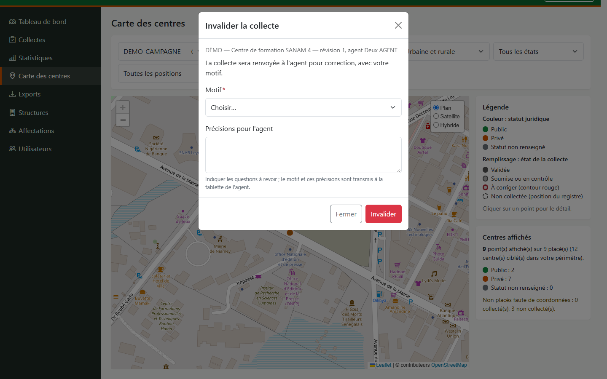<figcaption>Carte des centres</figcaption></figure>
    </div>

    <div class="ex">
      <h3>Exercices pour la séance (superviseurs)</h3>
      <ol>
        <li>Combien de collectes attendent votre décision ? Retrouvez le même nombre sur le tableau de bord et dans <span class="ui">Collectes</span>.</li>
        <li>Ouvrez une collecte, relevez un écart avec le registre et décidez s'il justifie une invalidation.</li>
        <li>Invalidez une collecte de démonstration avec un message précis ; l'agent formé avec vous doit le voir sur sa tablette après synchronisation.</li>
      </ol>
    </div>
  </section>

  <!-- ============================================================ ADMIN -->
  <section class="part" id="admin">
    <div class="part-head">
      <p class="eyebrow">Partie 3</p>
      <h2>Administrateur</h2>
      <p>Vous préparez et pilotez la campagne : comptes, structures, campagnes, affectations, version de l'application. L'ordre ci-dessous est celui d'un démarrage de campagne.</p>
    </div>

    <div class="chapter"><h3>1. Créer les comptes un par un</h3></div>
    <div class="step">
      <div class="txt">
        <ol>
          <li>Ouvrez <span class="ui">Utilisateurs</span>, puis <span class="ui">Nouvel utilisateur</span>.</li>
          <li><b>Identité</b> : matricule (identifiant de connexion, non modifiable), nom, prénom, sexe, téléphone (sert aussi d'identifiant sur la tablette).</li>
          <li><b>Rôle et rattachement</b> : agent, superviseur départemental, superviseur régional ou lecteur ; superviseur de la personne.</li>
          <li><b>Périmètre territorial</b> : choisissez le niveau, l'unité, puis <span class="ui">Ajouter</span>.</li>
          <li><span class="ui">Enregistrer</span> : un mot de passe provisoire s'affiche ; la personne le change à sa première connexion.</li>
        </ol>
      </div>
      <figure>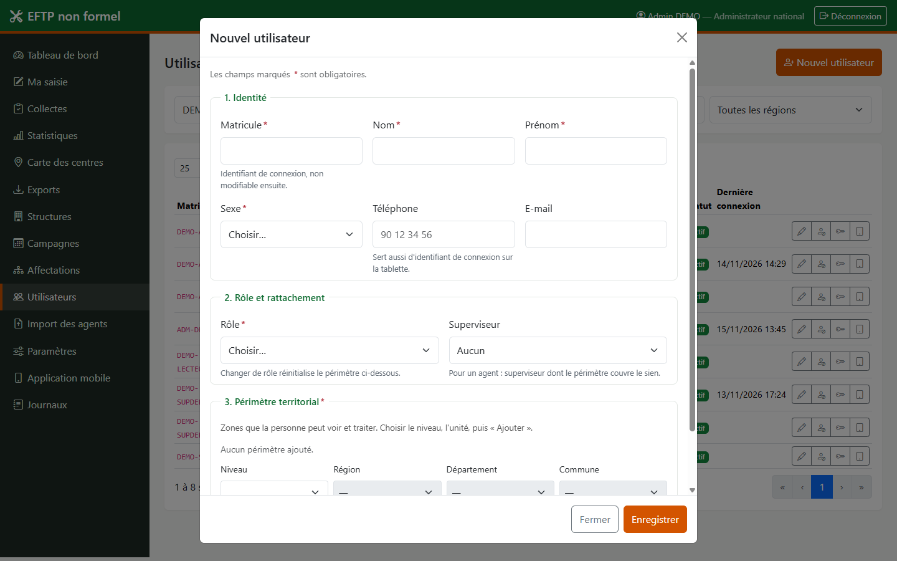<figcaption>Création d'un compte</figcaption></figure>
    </div>
    <div class="step">
      <div class="txt">
        <span class="num">Retrouver un compte</span>
        <p>La recherche porte sur le matricule, le nom ou le téléphone ; les filtres sur le rôle, le statut et la région. Les boutons en bout de ligne permettent de modifier le compte, de changer son statut, de réinitialiser son mot de passe et de gérer ses tablettes.</p>
      </div>
      <figure>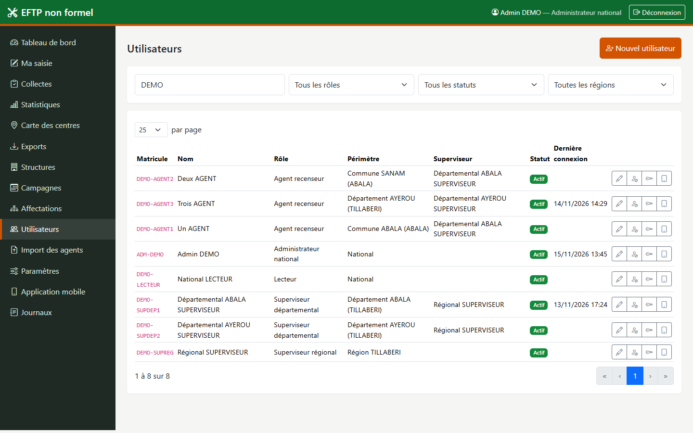<figcaption>Liste des utilisateurs</figcaption></figure>
    </div>

    <div class="chapter"><h3>2. Importer les agents en masse (Excel)</h3></div>
    <div class="step">
      <div class="txt">
        <ol>
          <li>Ouvrez <span class="ui">Import des agents</span> et téléchargez le modèle.</li>
          <li>Dans Excel, une ligne par compte. Sexe, rôle, région, département, commune et superviseur se <b>choisissent dans des listes déroulantes</b> : la région d'abord, puis seuls ses départements, puis leurs communes sont proposés. Les codes sont ajoutés automatiquement.</li>
          <li>Envoyez le fichier et appuyez sur <span class="ui">Contrôler le fichier</span> : chaque ligne est vérifiée, <b>rien n'est créé</b>.</li>
          <li>S'il n'y a aucune anomalie, validez : tous les comptes sont créés en une fois, ou aucun.</li>
          <li>Téléchargez l'archive des mots de passe provisoires. Son mot de passe ne s'affiche <b>qu'une fois</b> : notez-le.</li>
        </ol>
        <div class="note stop"><b>Archive confidentielle</b>Elle s'ouvre avec 7-Zip (l'explorateur Windows ne lit pas ce chiffrement). Remettez à chacun son seul mot de passe, puis supprimez le fichier.</div>
      </div>
      <figure>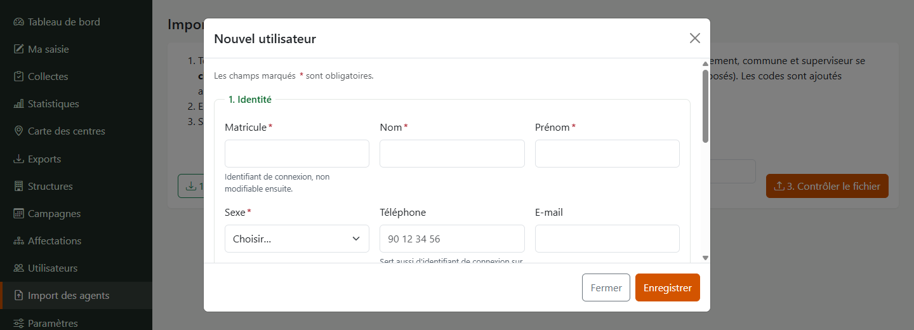<figcaption>Import en trois étapes</figcaption></figure>
    </div>

    <div class="chapter"><h3>3. Préparer et ouvrir la campagne</h3></div>
    <div class="step">
      <div class="txt">
        <ol>
          <li>Ouvrez <span class="ui">Campagnes</span>. Créez si besoin l'<b>année statistique</b> (<span class="ui">Nouvelle année</span>), puis la campagne (<span class="ui">Nouvelle campagne</span>).</li>
          <li>Indiquez la version du questionnaire, les dates, le nombre de niveaux de contrôle et le mode de collecte (tablette, papier ou mixte).</li>
        </ol>
        <div class="note tip"><b>Version du questionnaire</b>Elle reste modifiable tant qu'aucune collecte n'a été reçue, même campagne ouverte ; les tablettes téléchargent alors la nouvelle version toutes seules.</div>
      </div>
      <figure>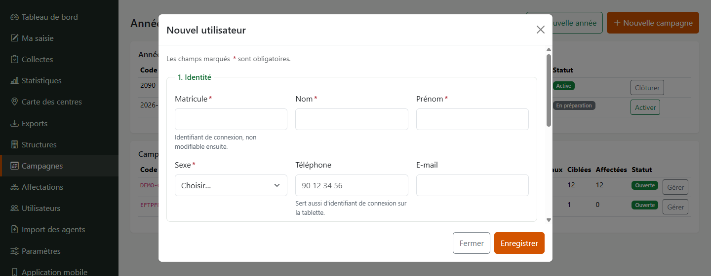<figcaption>Années et campagnes</figcaption></figure>
    </div>
    <div class="step">
      <div class="txt">
        <ol start="3">
          <li>Appuyez sur <span class="ui">Gérer</span> sur la ligne de la campagne.</li>
          <li><b>Cibler</b> : sans sélection, toutes les structures actives de votre périmètre sont ciblées ; les structures déjà ciblées ne sont pas dupliquées.</li>
          <li>Ouvrez la campagne. Les boutons <span class="ui">Suspendre</span> et <span class="ui">Clôturer</span> servent ensuite à l'arrêter.</li>
        </ol>
        <div class="note tip"><b>Recensement de terrain</b>Une campagne peut s'ouvrir sans structure ciblée : les agents créent alors les centres sur place avec le bouton « Nouveau centre ».</div>
      </div>
      <figure>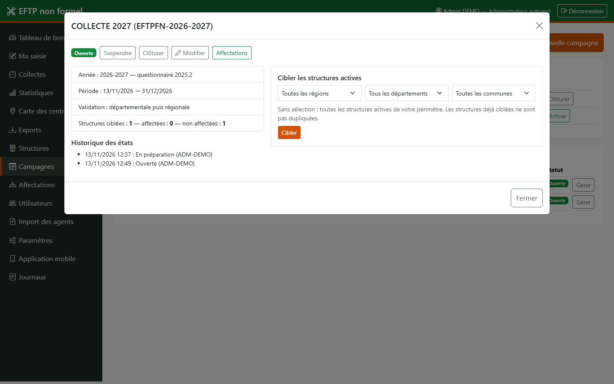<figcaption>Gérer une campagne</figcaption></figure>
    </div>

    <div class="chapter"><h3>4. Affecter les structures aux agents</h3></div>
    <div class="step">
      <div class="txt">
        <ol>
          <li>Ouvrez <span class="ui">Affectations</span> et choisissez la campagne.</li>
          <li>Filtrez par territoire ; décochez <span class="ui">Non affectées seulement</span> pour tout voir.</li>
          <li>Cochez les structures, choisissez l'agent, puis <span class="ui">Affecter la sélection</span>.</li>
          <li><span class="ui">Zones de travail d'un agent</span> fixe les communes où il peut créer de nouveaux centres.</li>
        </ol>
        <div class="note warn"><b>Retirer une affectation</b>n'est possible que si aucune collecte n'a été remise pour la structure.</div>
      </div>
      <figure>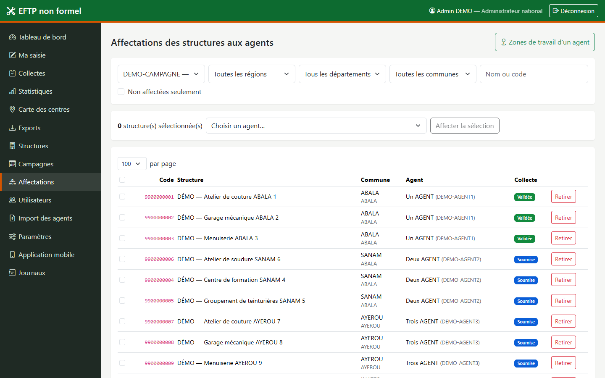<figcaption>Affectations</figcaption></figure>
    </div>

    <div class="chapter"><h3>5. Diffuser l'application aux tablettes</h3></div>
    <div class="step">
      <div class="txt">
        <ol>
          <li>Ouvrez <span class="ui">Application mobile</span>.</li>
          <li>Choisissez le fichier APK, indiquez la version (supérieure à la précédente) et les nouveautés à afficher aux agents.</li>
          <li>Cochez <span class="ui">Mise à jour obligatoire</span> seulement si les anciennes versions doivent être bloquées ; les collectes des agents restent conservées.</li>
          <li><span class="ui">Publier</span> : les tablettes proposent la mise à jour à leur prochaine synchronisation.</li>
        </ol>
      </div>
      <figure>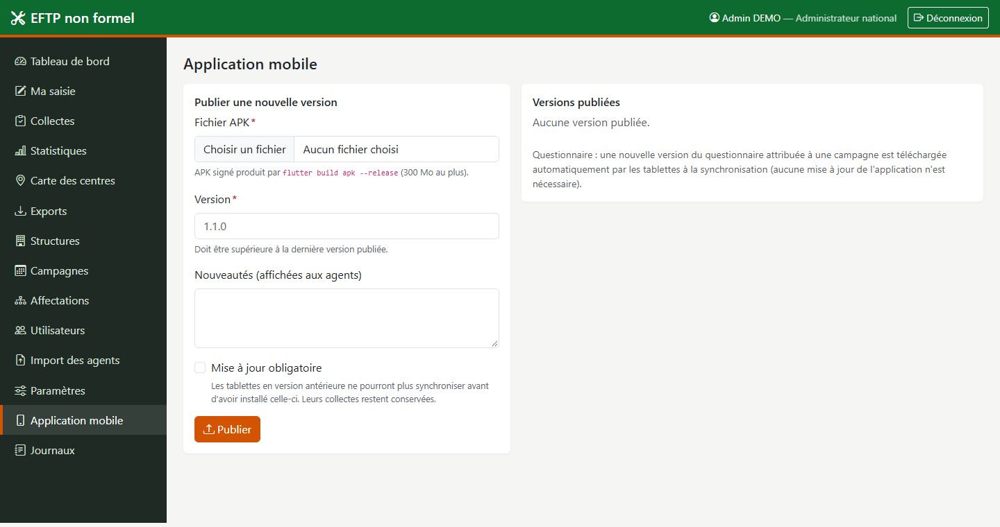<figcaption>Publication d'une version</figcaption></figure>
    </div>

    <div class="chapter"><h3>6. Piloter et exploiter les données</h3></div>
    <div class="step">
      <div class="txt">
        <ol>
          <li><span class="ui">Tableau de bord</span> : avancement de la campagne, trajectoire cible, collectes à contrôler.</li>
          <li><span class="ui">Statistiques</span> : indicateurs (apprentis, parité, encadrement, accompagnement), avancement, agents, évolution, comparaison ; boutons Excel, rapport PDF et microdonnées.</li>
          <li><span class="ui">Exports</span> : fichiers complets pour l'annuaire et les analyses.</li>
          <li><span class="ui">Journaux</span> : qui a fait quoi, et quand.</li>
        </ol>
      </div>
      <figure>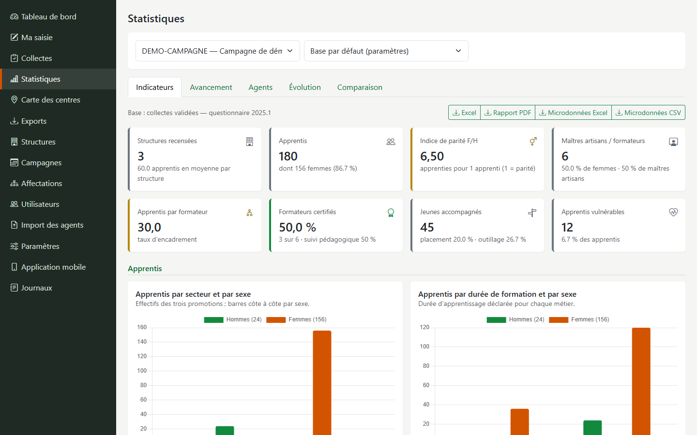<figcaption>Statistiques</figcaption></figure>
    </div>
    <div class="step">
      <div class="txt">
        <span class="num">Tableau de bord national</span>
        <p>La trajectoire compare les collectes reçues et validées à la cible linéaire, de l'ouverture à la clôture. Le graphique en anneau donne la répartition des collectes par état.</p>
      </div>
      <figure><figcaption>Tableau de bord de l'administrateur</figcaption></figure>
    </div>

    <div class="ex">
      <h3>Exercices pour la séance (administrateurs)</h3>
      <ol>
        <li>Remplissez le modèle d'import avec un superviseur départemental et deux agents rattachés à lui, puis contrôlez le fichier sans le valider.</li>
        <li>Créez une campagne de test, ciblez une commune, ouvrez-la, puis affectez deux structures à un agent.</li>
        <li>Donnez à un agent une zone de travail d'une commune et vérifiez qu'il peut y créer un nouveau centre depuis la tablette.</li>
      </ol>
    </div>
  </section>

  <!-- ============================================================ ÉTATS -->
  <section class="part" id="etats">
    <div class="part-head">
      <p class="eyebrow">Repère</p>
      <h2>États d'une collecte</h2>
      <p>Les mêmes couleurs sont utilisées sur la tablette et dans le back-office.</p>
    </div>
    <div class="table-wrap">
      <table>
        <thead><tr><th>Sur la tablette</th><th>Ce que cela veut dire</th><th>Que faire</th></tr></thead>
        <tbody>
          <tr><td><span class="chip c-grey">À collecter</span></td><td>Rien n'a encore été saisi.</td><td>Aller au centre et remplir le questionnaire.</td></tr>
          <tr><td><span class="chip c-orange">Brouillon</span></td><td>Saisie commencée, enregistrée sur la tablette.</td><td>Compléter puis « Terminer ».</td></tr>
          <tr><td><span class="chip c-blue">Terminée — en attente d'envoi</span></td><td>Prête, elle partira dès que le réseau revient.</td><td>Rien, ou appuyer sur ⟳ avec du réseau.</td></tr>
          <tr><td><span class="chip c-green">Envoyée — en contrôle</span></td><td>Reçue par le serveur, chez le superviseur.</td><td>Attendre la décision.</td></tr>
          <tr><td><span class="chip c-green">Validée</span></td><td>Acceptée, comptée dans les statistiques.</td><td>Rien.</td></tr>
          <tr><td><span class="chip c-red">À corriger</span></td><td>Renvoyée par le superviseur avec un motif.</td><td>Ouvrir, lire le motif, corriger, « Terminer ».</td></tr>
          <tr><td><span class="chip c-red">Conflit : action requise</span></td><td>La fiche a changé ailleurs pendant votre saisie. Votre copie est conservée.</td><td>Prévenir le superviseur avant de choisir quelle version garder.</td></tr>
        </tbody>
      </table>
    </div>
  </section>

  <!-- ============================================================ FAQ -->
  <section class="part" id="faq">
    <div class="part-head">
      <p class="eyebrow">Dépannage</p>
      <h2>Questions fréquentes</h2>
    </div>
    <div class="faq">
      <details><summary>Le GPS ne trouve pas la position.</summary><p>Vérifiez que la localisation de la tablette est activée, sortez à découvert et appuyez sur « Réessayer ». Si c'est impossible, continuez : la position pourra être relevée dans le questionnaire, ou déclarée indisponible avec un motif.</p></details>
      <details><summary>Une collecte reste « en attente d'envoi ».</summary><p>La tablette n'a pas de réseau, ou le serveur était injoignable. Elle repart toute seule. Menu ⋮ › « Tester la connexion au serveur » dit ce qui ne va pas ; « Journal de synchronisation » montre les derniers essais.</p></details>
      <details><summary>« Centre refusé par le serveur » s'affiche sous un nouveau centre.</summary><p>Le plus souvent, la commune n'est pas dans votre zone de travail. Votre saisie est conservée ; prévenez votre superviseur pour qu'il corrige votre zone, puis synchronisez.</p></details>
      <details><summary>J'ai oublié mon mot de passe.</summary><p>Demandez à votre superviseur ou à l'administrateur de le réinitialiser. Vous recevrez un mot de passe provisoire à changer à la connexion.</p></details>
      <details><summary>Je dois changer de tablette.</summary><p>Synchronisez d'abord : tant qu'il reste des collectes non envoyées, elles ne sont que sur l'ancienne tablette. Connectez-vous ensuite sur la nouvelle ; vos structures arrivent à la synchronisation.</p></details>
      <details><summary>Le back-office n'affiche pas la dernière version d'un écran.</summary><p>Rechargez la page (touche F5). Le serveur demande désormais au navigateur de vérifier les mises à jour à chaque chargement.</p></details>
    </div>
  </section>
</main>

<footer>
  <div class="wrap">Guide établi sur l'application telle qu'elle est en novembre 2026 (questionnaire 2025.2). Les écrans montrent des données fictives de démonstration. Les captures de la tablette se régénèrent à chaque évolution avec <code>flutter test test/guide_screenshots_test.dart</code>.</div>
</footer>
